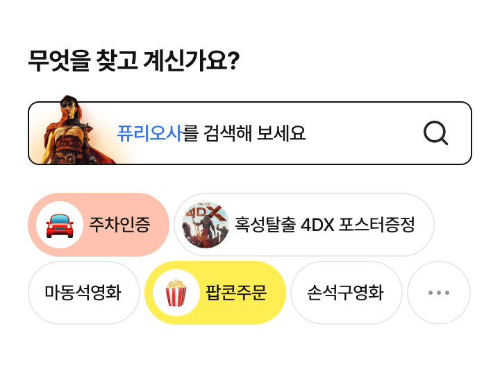
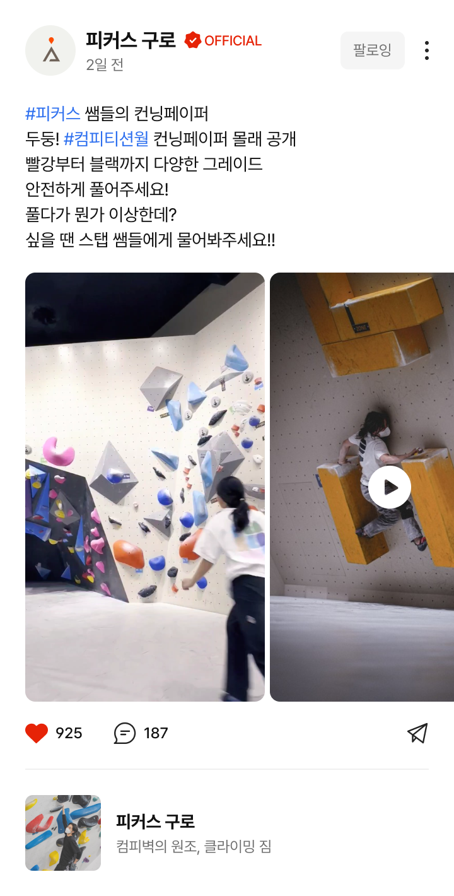

<div class="wrap_inner">
    <strong class="badge">메인</strong>

    <div class="device_wrap">
        <div>
            <p class="header"></p>
            <ul>
                <li></li>
                <li></li>
                <li></li>
                <li></li>
                <li></li>
                <li></li>
                <li></li>
                <li></li>
                <li></li>
                <li></li>
                <li></li>
                <li></li>
                <li></li>
                <li></li>
            </ul>
        </div>
        <p class="bottom"></p>
    </div>
    <div class="txt_wrap_s">
        <p><strong>하단 네비게이션을 추가</strong>하여<br/> ‘피드'’예매예약'’매점'등<br/> 주요서비스로의 이동이 더욱 쉬워집니다.</p>
    </div>
</div>

<script>
    $(function(){
        setTimeout(()=>{
            $('.txt_wrap_s, .device_wrap').addClass('active');
        },500);
    });
</script>

<style>
    .wrap_inner {align-items:end;}
    .badge {position:absolute; top:0; left:0;}
    .txt_wrap_s {padding-bottom:120px; opacity:0; transition:all 0.5s;}
    .txt_wrap_s.active {opacity:1;}
    .txt_wrap_s p {opacity:0; transform:scale(0.8); transition:all 0.5s 0.85s;}
    .txt_wrap_s.active p {opacity:1; transform:scale(1);}
    .device_wrap {margin-left:280px;}
    .device_wrap > div {overflow:hidden;}
    .device_wrap > div:after {width:100%; background-color:rgba(0,0,0,0.7); opacity:0; content:''; position:absolute; top:0; bottom:89px; left:0; display:block; transition:all 0.5s 1.5s;}
    .device_wrap.active > div:after {opacity:1;}
    .device_wrap img {width:100%;}
</style>